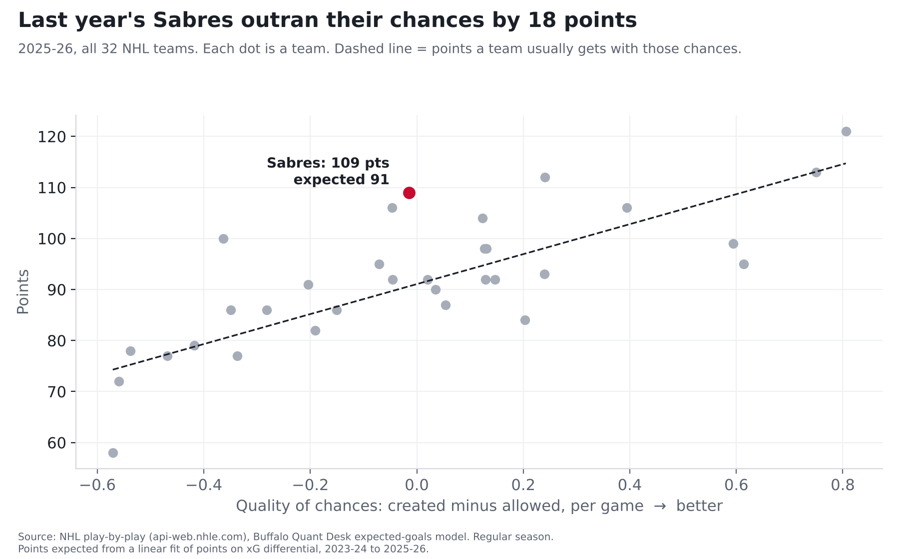

Buffalo sports, by the numbers
The quant desk for the Bills and Sabres.
Predictive analysis built on every play, with a public, graded record of every call we make.
Latest
The Sabres' 50-win season was built on goals that weren't supposed to happenBased on the scoring chances they created and gave up, last year's Sabres played like a 91-point team. They finished with 109. Only one team in the NHL outran its chances by more. The difference came from hot goaltending and hot shooting, and those rarely last.

Also:
- The Sabres' penalty kill is where this season is leaking
- The Sabres' goalies aren't the problem. They're just not the bailout anymore.
- As many chances, fewer goals: too early to call it a slump
- At even strength, these Sabres look like last year's Sabres
- Josh Allen, 2018 to now: what the data actually says
- Is the Bills defense actually fixed?
The Ledger
Every prediction is timestamped before kickoff and graded after. First card: Bills at Vikings, Monday Night Football. See the record →The rules
- Receipts. Every call is logged before kickoff and graded in public. Misses stay up.
- Predictive over descriptive. What happens next, and why.
- Plain English. One sentence you can repeat, one chart you can read.
- Traceable. Every number is computed from public play-by-play, and every method is written down.
- No betting content. This is analysis. No odds, no picks, no lines.